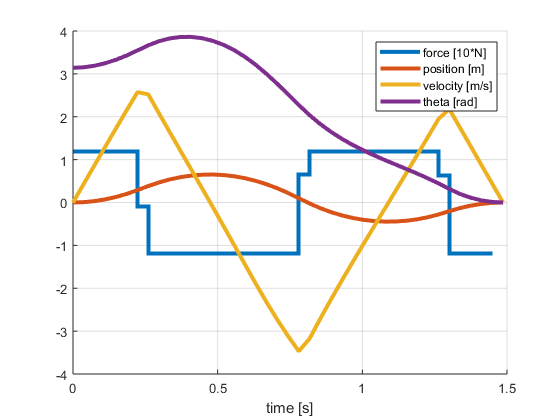
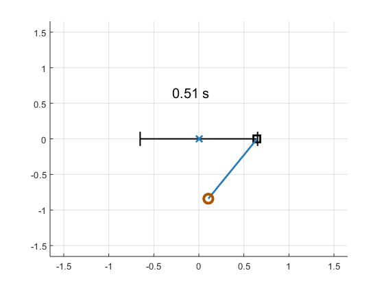
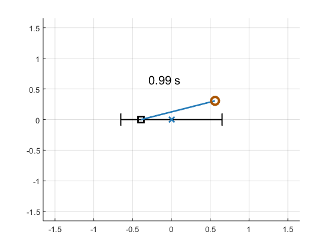
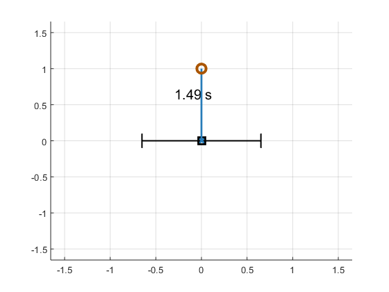
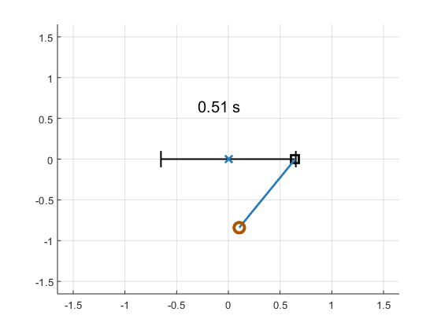
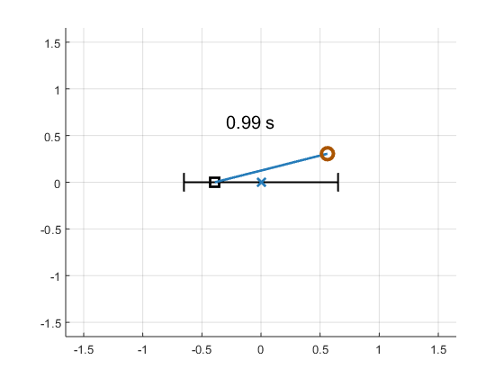
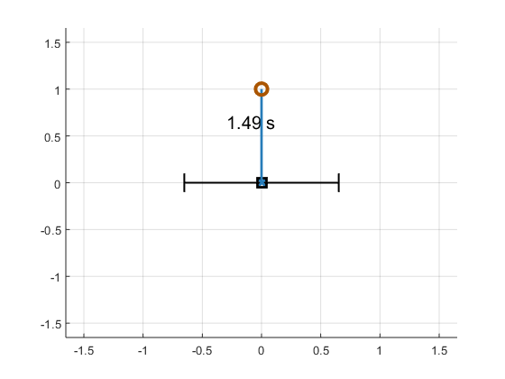
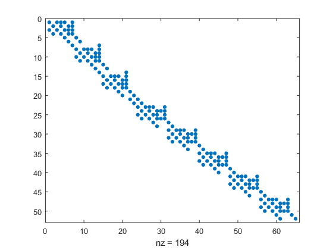
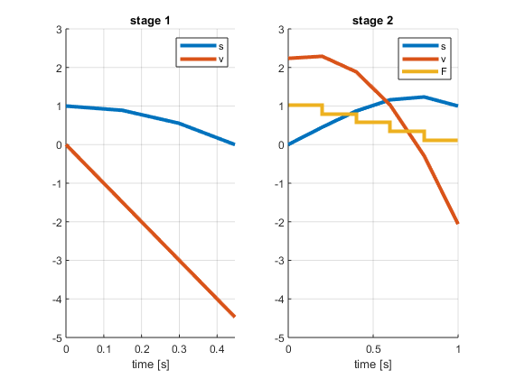

OpenOCL - Open Optimal Control Library
Software for optimal control, trajectory optimization, and model predictive control.
Web: https://openocl.org/
API docs: https://openocl.org/api-docs/
Contents
Get started
Run an example with:
Get a list of all examples:
Look at example code:
Get help from the command line
Examples
- Balancing a ball on a beam
- Bouncing ball (multi-stage)
- Cartpole swingup
- Pendulum simulation in cartesian corrdinates
- Optimal taking turns with a race-car
- Van der Pol oszillator
List of optimal control examples
- ocl.examples.vanderpol
- ocl.examples.ballandbeam
- ocl.examples.pendulum
- ocl.examples.racecar
- ocl.examples.cartpole
- ocl.examples.bouncingball (multi-phase)
List of simulation examples
Copyright notice
Copyright 2019 Jonas Koenemann, Moritz Diehl, University of Freiburg Redistribution is permitted under the 3-Clause BSD License terms. Please ensure the above copyright notice is visible in any derived work.
Get the license text from:
https://openocl.org/bsd-3-clause/
Cartpole example
% Copyright 2019 Jonas Koenemann, Moritz Diehl, University of Freiburg % Redistribution is permitted under the 3-Clause BSD License terms. Please % ensure the above copyright notice is visible in any derived work. % function [sol,times,solver] = cartpole solver = ocl.Solver([], 'vars', @varsfun, 'dae', @daefun, 'pointcosts', @pointcosts, 'N', 40, 'd', 3); p0 = 0; v0 = 0; theta0 = 180*pi/180; omega0 = 0; solver.setInitialBounds('p', p0); solver.setInitialBounds('v', v0); solver.setInitialBounds('theta', theta0); solver.setInitialBounds('omega', omega0); solver.setInitialBounds('time', 0); solver.setEndBounds('p', 0); solver.setEndBounds('v', 0); solver.setEndBounds('theta', 0); solver.setEndBounds('omega', 0); % Run solver to obtain solution [sol,times] = solver.solve(solver.ig()); % visualize solution figure; hold on; grid on; oclStairs(times.controls, sol.controls.F/10.) xlabel('time [s]'); oclPlot(times.states, sol.states.p) xlabel('time [s]'); oclPlot(times.states, sol.states.v) xlabel('time [s]'); oclPlot(times.states, sol.states.theta) legend({'force [10*N]','position [m]','velocity [m/s]','theta [rad]'}) xlabel('time [s]'); animate(sol,times); end function varsfun(sh) sh.addState('p', 'lb', -5, 'ub', 5); sh.addState('theta', 'lb', -2*pi, 'ub', 2*pi); sh.addState('v'); sh.addState('omega'); sh.addState('time', 'lb', 0, 'ub', 10); sh.addControl('F', 'lb', -12, 'ub', 12); end function daefun(sh,x,~,u,~) g = 9.8; cm = 1.0; pm = 0.1; phl = 0.5; % pole half length m = cm+pm; pml = pm*phl; % pole mass length ctheta = cos(x.theta); stheta = sin(x.theta); domega = (g*stheta + ... ctheta * (-u.F-pml*x.omega^2*stheta) / m) / ... (phl * (4.0 / 3.0 - pm * ctheta^2 / m)); a = (u.F + pml*(x.omega^2*stheta-domega*ctheta)) / m; sh.setODE('p',x.v); sh.setODE('theta',x.omega); sh.setODE('v',a); sh.setODE('omega',domega); sh.setODE('time', 1); end function pointcosts(self,k,K,x,~) if k == K self.add( x.time ); end end
close all; ocl.examples.cartpole; %
This is Ipopt version 3.12.3, running with linear solver mumps.
NOTE: Other linear solvers might be more efficient (see Ipopt documentation).
Number of nonzeros in equality constraint Jacobian...: 4894
Number of nonzeros in inequality constraint Jacobian.: 0
Number of nonzeros in Lagrangian Hessian.............: 920
Total number of variables............................: 876
variables with only lower bounds: 40
variables with lower and upper bounds: 518
variables with only upper bounds: 0
Total number of equality constraints.................: 839
Total number of inequality constraints...............: 0
inequality constraints with only lower bounds: 0
inequality constraints with lower and upper bounds: 0
inequality constraints with only upper bounds: 0
iter objective inf_pr inf_du lg(mu) ||d|| lg(rg) alpha_du alpha_pr ls
0 9.9999900e-003 3.68e-001 2.52e-013 -1.0 0.00e+000 - 0.00e+000 0.00e+000 0
1 5.1311243e-002 2.49e-001 9.82e+002 -1.0 3.33e+001 - 2.63e-001 3.57e-001f 1
2 5.6212144e-002 2.32e-001 9.16e+002 -1.0 6.70e+001 - 1.95e-001 7.18e-002h 1
3 5.9338726e-002 2.20e-001 1.54e+003 -1.0 1.45e+002 - 8.94e-002 5.21e-002h 1
4 6.1570468e-002 2.17e-001 2.25e+003 -1.0 6.37e+002 - 2.39e-002 1.06e-002h 1
5 6.9084215e-002 2.17e-001 2.39e+003 -1.0 3.24e+003 - 2.67e-003 2.29e-003h 1
6 7.0303247e-002 2.17e-001 2.52e+003 -1.0 1.53e+003 - 1.22e-002 1.21e-003h 1
7 7.0764582e-002 2.16e-001 6.59e+003 -1.0 1.18e+003 - 7.51e-003 1.05e-003h 1
8 7.0549870e-002 2.16e-001 7.54e+004 -1.0 3.42e+003 - 3.46e-003 9.94e-005h 1
9r7.0549870e-002 2.16e-001 1.00e+003 -0.7 0.00e+000 - 0.00e+000 3.05e-007R 5
iter objective inf_pr inf_du lg(mu) ||d|| lg(rg) alpha_du alpha_pr ls
10r7.1277956e-002 1.89e-001 9.98e+002 -0.7 4.61e+002 - 1.78e-003 1.23e-003f 1
11 7.1402801e-002 1.89e-001 6.29e+000 -1.0 5.24e+003 - 1.21e-004 2.51e-005h 1
12 8.0087301e-002 1.88e-001 7.45e+002 -1.0 5.63e+003 - 1.36e-004 1.61e-003f 1
13 8.0445259e-002 1.88e-001 7.64e+002 -1.0 4.23e+003 - 2.68e-004 8.06e-005h 1
14 8.0591893e-002 1.88e-001 7.66e+002 -1.0 7.50e+003 - 1.70e-007 2.23e-005h 1
15 9.2712095e-002 1.88e-001 1.37e+003 -1.0 7.70e+003 - 2.37e-005 1.76e-003f 1
16 9.2851582e-002 1.88e-001 1.38e+003 -1.0 4.57e+003 - 1.73e-003 2.96e-005h 1
17 9.2851872e-002 1.88e-001 1.38e+003 -1.0 1.05e+004 - 8.85e-009 2.73e-008f 6
18 9.5848999e-002 1.88e-001 8.65e+003 -1.0 1.04e+005 - 3.65e-009 3.46e-005h 1
19 9.7458816e-002 1.88e-001 7.41e+003 -1.0 3.25e+004 - 1.60e-004 5.68e-005f 1
iter objective inf_pr inf_du lg(mu) ||d|| lg(rg) alpha_du alpha_pr ls
20r9.7458816e-002 1.88e-001 9.99e+002 -0.7 0.00e+000 - 0.00e+000 2.15e-007R 2
21r1.0485485e-001 1.69e-001 9.96e+002 -0.7 1.12e+002 - 2.05e-003 2.75e-003f 1
22r1.0485485e-001 1.69e-001 9.99e+002 -0.8 0.00e+000 - 0.00e+000 2.89e-007R 6
23r1.2848090e-001 3.40e-001 9.95e+002 -0.8 9.36e+001 - 3.65e-003 3.92e-003f 1
24r1.5476055e-001 7.69e-001 9.92e+002 -0.8 1.30e+002 - 2.92e-003 3.35e-003f 1
25r1.8127847e-001 1.06e+000 9.88e+002 -0.8 8.16e+001 - 1.99e-002 3.52e-003f 1
26r3.7162271e-001 1.47e+000 9.70e+002 -0.8 2.25e+001 - 1.58e-002 1.86e-002f 1
27r5.3124580e-001 1.60e+000 9.54e+002 -0.8 1.54e+001 - 1.66e-002 1.66e-002f 1
28r6.3605832e-001 1.64e+000 9.41e+002 -0.8 1.43e+001 - 1.40e-002 1.33e-002f 1
29r6.9960773e-001 1.64e+000 9.30e+002 -0.8 1.34e+001 - 1.48e-002 1.15e-002f 1
iter objective inf_pr inf_du lg(mu) ||d|| lg(rg) alpha_du alpha_pr ls
30r7.3203238e-001 1.65e+000 9.18e+002 -0.8 1.24e+001 - 2.35e-002 1.27e-002f 1
31r7.6814826e-001 1.65e+000 8.83e+002 -0.8 1.24e+001 - 3.45e-001 3.85e-002f 1
32r8.3665022e-001 1.58e+000 5.78e+002 -0.8 2.26e+001 - 3.02e-001 4.34e-001f 1
33r8.8514592e-001 1.54e+000 5.62e+002 -0.8 2.07e+001 0.0 3.56e-003 3.06e-002f 1
34r9.0665699e-001 1.50e+000 9.00e+002 -0.8 2.85e-001 1.3 9.98e-001 3.03e-001f 1
35r9.3023764e-001 1.50e+000 8.64e+002 -0.8 2.55e+001 0.9 1.73e-003 5.31e-003f 1
36r9.4041185e-001 1.47e+000 1.07e+003 -0.8 3.68e-001 1.3 5.04e-001 1.25e-001f 1
37r1.0734076e+000 1.34e+000 8.05e+002 -0.8 4.00e+000 0.8 6.65e-003 1.42e-001f 1
38r1.0935370e+000 1.28e+000 6.56e+002 -0.8 7.56e-001 1.2 1.92e-001 1.72e-001f 1
39r1.2391416e+000 9.59e-001 9.67e+002 -0.8 5.74e+000 0.7 1.64e-002 1.40e-001f 1
iter objective inf_pr inf_du lg(mu) ||d|| lg(rg) alpha_du alpha_pr ls
40r1.3333566e+000 6.53e-001 5.88e+002 -0.8 1.56e+000 1.2 3.90e-001 3.92e-001f 1
41r1.5490259e+000 2.75e-001 7.00e+002 -0.8 2.99e+001 0.7 1.59e-003 4.08e-002f 1
42r1.5507638e+000 2.73e-001 8.71e+002 -0.8 1.87e+000 1.1 8.43e-001 8.51e-003f 1
43r1.5410347e+000 1.31e-001 5.32e+002 -0.8 6.93e-001 1.6 9.73e-001 5.08e-001f 1
44 1.5337335e+000 1.29e-001 1.83e+000 -1.0 5.20e+001 - 5.65e-002 1.81e-002h 1
45 1.5285048e+000 1.18e-001 5.64e+001 -1.0 5.62e+001 - 2.03e-002 8.82e-002h 1
46 1.5263327e+000 1.17e-001 6.99e+001 -1.0 4.45e+001 - 8.04e-002 3.60e-002h 2
47 1.5250177e+000 1.16e-001 1.24e+002 -1.0 3.56e+001 - 2.12e-002 4.40e-002h 1
48 1.5330292e+000 1.15e-001 1.23e+002 -1.0 7.82e+001 - 3.72e-003 2.29e-002f 4
49 1.5393102e+000 1.13e-001 1.20e+002 -1.0 7.52e+001 - 6.32e-002 2.07e-002f 4
iter objective inf_pr inf_du lg(mu) ||d|| lg(rg) alpha_du alpha_pr ls
50 1.6171122e+000 7.68e-001 2.17e+002 -1.0 8.48e+001 - 2.03e-003 2.38e-001f 1
51 1.6188960e+000 7.62e-001 2.17e+002 -1.0 4.93e+001 - 2.13e-002 7.53e-003h 2
52 1.6808089e+000 5.84e-001 5.15e+002 -1.0 1.06e+002 - 3.72e-003 2.20e-001f 1
53 1.7051549e+000 5.44e-001 4.91e+002 -1.0 3.05e+001 - 5.81e-002 6.70e-002h 1
54 1.7530510e+000 4.89e-001 4.39e+002 -1.0 2.52e+001 - 5.66e-002 1.00e-001f 1
55 1.7894040e+000 4.38e-001 3.94e+002 -1.0 1.66e+001 - 9.15e-002 1.04e-001f 1
56 1.8626954e+000 3.49e-001 3.22e+002 -1.0 2.48e+001 - 1.30e-001 2.05e-001f 1
57 2.1392021e+000 2.55e-001 2.49e+002 -1.0 9.18e+000 - 2.22e-001 1.00e+000f 1
58 2.2692860e+000 8.15e-002 2.39e+002 -1.0 7.13e+000 - 4.13e-001 9.55e-001f 1
59 2.3170960e+000 1.37e-003 5.94e+000 -1.0 7.79e-001 0.0 9.82e-001 1.00e+000f 1
iter objective inf_pr inf_du lg(mu) ||d|| lg(rg) alpha_du alpha_pr ls
60 2.5702173e+000 2.96e-001 1.91e+001 -1.0 2.56e+001 - 2.52e-001 5.17e-001f 1
61 3.2255626e+000 3.42e-001 1.01e+001 -1.0 1.22e+001 - 5.82e-001 1.00e+000f 1
62 3.5065017e+000 5.22e-001 9.55e+000 -1.0 2.61e+002 - 6.43e-002 2.91e-002f 1
63 3.7381651e+000 2.96e-001 6.83e+000 -1.0 2.54e+001 - 3.62e-001 2.89e-001f 1
64 3.6914531e+000 7.60e-002 1.47e+001 -1.0 1.70e+000 -0.5 1.00e+000 7.48e-001h 1
65 3.6858672e+000 4.07e-003 2.59e+000 -1.0 1.01e+000 -1.0 1.00e+000 1.00e+000f 1
66 3.7885023e+000 1.83e-002 2.24e+000 -1.0 1.41e+000 -1.4 1.00e+000 1.00e+000f 1
67 4.1047940e+000 1.24e-001 1.38e+000 -1.0 4.98e+000 -1.9 1.00e+000 1.00e+000f 1
68 4.3874160e+000 3.14e-002 9.33e-001 -1.0 2.47e+000 -1.5 1.00e+000 1.00e+000h 1
69 4.2777428e+000 4.53e-003 1.25e+000 -1.7 1.13e+000 -2.0 9.77e-001 1.00e+000h 1
iter objective inf_pr inf_du lg(mu) ||d|| lg(rg) alpha_du alpha_pr ls
70 2.9714430e+000 1.61e+000 2.59e+000 -1.7 8.75e+000 - 7.07e-001 1.00e+000f 1
71 3.2124335e+000 8.26e-001 1.40e+000 -1.7 1.79e+001 - 9.13e-001 4.90e-001h 1
72 3.5101806e+000 5.36e-001 3.40e-001 -1.7 8.94e+000 - 1.00e+000 1.00e+000h 1
73 3.5210918e+000 6.31e-001 3.11e-001 -1.7 6.41e+001 - 7.97e-002 4.86e-002h 3
74 3.5354484e+000 4.66e-003 1.87e-001 -1.7 1.14e+000 -2.4 1.00e+000 1.00e+000h 1
75 2.6265916e+000 3.27e-001 9.77e-001 -2.5 7.41e+000 -2.9 7.79e-001 8.62e-001f 1
76 2.3890005e+000 3.59e-001 6.26e-001 -2.5 1.58e+001 -3.4 8.80e-001 4.24e-001h 1
77 2.3253821e+000 5.77e-001 8.64e-001 -2.5 4.59e+002 -3.9 4.22e-002 3.32e-002h 1
78 2.2757012e+000 4.73e-001 7.18e-001 -2.5 1.10e+001 -3.4 1.00e+000 1.88e-001h 1
79 2.2329143e+000 5.15e-001 9.39e-001 -2.5 3.51e+004 -3.9 1.85e-004 4.10e-004h 1
iter objective inf_pr inf_du lg(mu) ||d|| lg(rg) alpha_du alpha_pr ls
80 2.0490698e+000 3.19e-001 7.66e-001 -2.5 1.42e+001 -3.5 7.73e-001 6.87e-001h 1
81 1.9726582e+000 2.42e-002 8.73e-002 -2.5 5.40e+000 -3.1 1.00e+000 1.00e+000h 1
82 1.8783869e+000 1.47e-001 3.73e-001 -2.5 1.04e+001 -3.5 7.86e-001 9.55e-001h 1
83 1.8259082e+000 1.70e-002 3.76e-002 -2.5 3.13e+000 -3.1 1.00e+000 1.00e+000h 1
84 1.7686621e+000 9.09e-002 3.25e-001 -2.5 9.28e+000 -3.6 1.00e+000 1.00e+000h 1
85 1.7275934e+000 1.18e-001 3.73e-001 -2.5 9.40e+001 -4.1 9.65e-002 6.93e-002h 1
86 1.6837375e+000 6.41e-002 1.83e-001 -2.5 9.19e+000 -3.6 1.00e+000 1.00e+000h 1
87 1.6322395e+000 9.69e-002 1.86e-001 -2.5 1.57e+001 -4.1 5.26e-001 6.11e-001h 1
88 1.6037993e+000 9.99e-002 1.37e-001 -2.5 2.38e+001 - 3.67e-001 2.27e-001h 1
89 1.6056300e+000 2.79e-003 3.94e-002 -2.5 5.66e+000 - 1.00e+000 1.00e+000h 1
iter objective inf_pr inf_du lg(mu) ||d|| lg(rg) alpha_du alpha_pr ls
90 1.6051379e+000 5.26e-004 1.26e-003 -2.5 2.36e+000 - 1.00e+000 1.00e+000h 1
91 1.4998892e+000 2.07e-002 5.54e-002 -3.8 5.81e+000 - 7.62e-001 8.54e-001f 1
92 1.4975956e+000 3.40e-003 1.55e-002 -3.8 4.98e+000 - 8.98e-001 8.36e-001h 1
93 1.4972202e+000 2.83e-004 2.74e-003 -3.8 1.56e+000 - 1.00e+000 1.00e+000h 1
94 1.4971301e+000 1.18e-005 7.05e-005 -3.8 4.31e-001 - 1.00e+000 1.00e+000h 1
95 1.4919361e+000 3.19e-004 8.35e-004 -5.7 9.36e-001 - 9.60e-001 9.78e-001h 1
96 1.4918031e+000 5.39e-005 2.92e-004 -5.7 8.44e-001 - 1.00e+000 1.00e+000h 1
97 1.4917932e+000 7.21e-006 4.15e-005 -5.7 3.57e-001 - 1.00e+000 1.00e+000h 1
98 1.4917921e+000 2.65e-007 1.45e-006 -5.7 6.65e-002 - 1.00e+000 1.00e+000h 1
99 1.4917242e+000 1.05e-006 4.38e-006 -8.6 1.01e-001 - 9.92e-001 1.00e+000h 1
iter objective inf_pr inf_du lg(mu) ||d|| lg(rg) alpha_du alpha_pr ls
100 1.4917240e+000 6.09e-009 3.26e-008 -8.6 9.95e-003 - 1.00e+000 1.00e+000h 1
101 1.4917240e+000 3.41e-013 1.78e-012 -8.6 7.42e-005 - 1.00e+000 1.00e+000h 1
Number of Iterations....: 101
(scaled) (unscaled)
Objective...............: 1.4917240438141970e+000 1.4917240438141970e+000
Dual infeasibility......: 1.7752906803662653e-012 1.7752906803662653e-012
Constraint violation....: 3.4094949086238557e-013 3.4094949086238557e-013
Complementarity.........: 2.5059711592433994e-009 2.5059711592433994e-009
Overall NLP error.......: 2.5059711592433994e-009 2.5059711592433994e-009
Number of objective function evaluations = 137
Number of objective gradient evaluations = 82
Number of equality constraint evaluations = 137
Number of inequality constraint evaluations = 0
Number of equality constraint Jacobian evaluations = 105
Number of inequality constraint Jacobian evaluations = 0
Number of Lagrangian Hessian evaluations = 101
Total CPU secs in IPOPT (w/o function evaluations) = 0.422
Total CPU secs in NLP function evaluations = 0.065
EXIT: Optimal Solution Found.
t_proc [s] t_wall [s] n_eval
my_solver 0.487 0.487 1
nlp_f 0 0 137
nlp_g 0 0 137
nlp_grad_f 0.016 0.0156 83
nlp_hess_l 0.032 0.0323 98
nlp_jac_g 0.017 0.0166 106
    
   Multi-phase bouncing ball example
function [sol,times,solver] = bouncingball before_contact = ocl.Phase([], @before_contact_vars, @before_contact_ode, 'N', 3, 'd', 2); after_contact = ocl.Phase(1, @after_contact_vars, @after_contact_ode, ... @after_contact_cost, 'N', 5, 'd', 2); before_contact.setInitialStateBounds('s', 1); before_contact.setInitialStateBounds('v', 0); before_contact.setEndStateBounds('s', 0); after_contact.setEndStateBounds('s', 1); solver = OclSolver({before_contact, after_contact}, {@phase_transition}); [sol,times] = solver.solve(solver.getInitialGuess()); disp('Jacobian of the constraints'); figure spy(full(solver.jacobian_pattern(sol))) % phase 1 figure; subplot(1,2,1) hold on; grid on; oclPlot(times{1}.states, sol{1}.states.s) oclPlot(times{1}.states, sol{1}.states.v) legend({'s','v'}) xlabel('time [s]'); ylim([-5 3]) yticks(-5:3) title('phase 1') % phase 2 subplot(1,2,2) hold on; grid on; oclPlot(times{2}.states, sol{2}.states.s) oclPlot(times{2}.states, sol{2}.states.v) oclStairs(times{2}.states, [sol{2}.controls.F;sol{2}.controls.F(end)]) legend({'s','v','F'}) xlabel('time [s]'); ylim([-5 3]) yticks(-5:3) title('phase 2') end function before_contact_vars(sh) sh.addState('s'); sh.addState('v'); end function before_contact_ode(sh,x,~,~,~) sh.setODE('s', x.v); sh.setODE('v', -10); end function after_contact_vars(sh) sh.addState('s'); sh.addState('v'); sh.addControl('F'); end function after_contact_ode(sh,x,~,u,~) sh.setODE('s', x.v); sh.setODE('v', -10 + 10*u.F); end function after_contact_cost(ch,~,~,u,~) ch.add( u.F^2 ); end function phase_transition(ch, x0, xF) % x0 current phase % xF previous phase ch.add(x0.s, '==', xF.s); ch.add(x0.v, '==', -xF.v/2); end
close all;
ocl.examples.bouncingball;
This is Ipopt version 3.12.3, running with linear solver mumps.
NOTE: Other linear solvers might be more efficient (see Ipopt documentation).
Number of nonzeros in equality constraint Jacobian...: 167
Number of nonzeros in inequality constraint Jacobian.: 0
Number of nonzeros in Lagrangian Hessian.............: 11
Total number of variables............................: 56
variables with only lower bounds: 3
variables with lower and upper bounds: 0
variables with only upper bounds: 0
Total number of equality constraints.................: 52
Total number of inequality constraints...............: 0
inequality constraints with only lower bounds: 0
inequality constraints with lower and upper bounds: 0
inequality constraints with only upper bounds: 0
iter objective inf_pr inf_du lg(mu) ||d|| lg(rg) alpha_du alpha_pr ls
0 0.0000000e+000 3.33e+000 5.55e-016 -1.0 0.00e+000 - 0.00e+000 0.00e+000 0
1 7.5757955e-001 5.33e-001 7.39e-001 -1.0 2.00e+000 - 1.00e+000 1.00e+000h 1
2 2.7272864e-001 5.33e-001 1.01e+001 -1.7 4.00e+000 - 3.59e-001 1.00e+000h 1
3 4.0740944e-001 5.93e-002 1.78e+000 -1.7 1.33e+000 - 1.00e+000 1.00e+000h 1
4 4.2884843e-001 1.21e-003 7.34e-002 -1.7 1.90e-001 - 1.00e+000 1.00e+000h 1
5 4.2931055e-001 5.47e-007 1.85e-005 -2.5 4.05e-003 - 1.00e+000 1.00e+000h 1
6 4.2931076e-001 1.12e-013 4.73e-009 -3.8 1.84e-006 - 1.00e+000 1.00e+000h 1
7 4.2931076e-001 1.60e-015 1.84e-011 -5.7 3.77e-013 - 1.00e+000 1.00e+000h 1
8 4.2931076e-001 1.11e-015 2.52e-014 -8.6 9.12e-016 - 1.00e+000 1.00e+000 0
Number of Iterations....: 8
(scaled) (unscaled)
Objective...............: 4.2931076078557240e-001 4.2931076078557240e-001
Dual infeasibility......: 2.5183551600961758e-014 2.5183551600961758e-014
Constraint violation....: 1.1102230246251565e-015 1.1102230246251565e-015
Complementarity.........: 2.5059035596804191e-009 2.5059035596804191e-009
Overall NLP error.......: 2.5059035596804191e-009 2.5059035596804191e-009
Number of objective function evaluations = 9
Number of objective gradient evaluations = 9
Number of equality constraint evaluations = 9
Number of inequality constraint evaluations = 0
Number of equality constraint Jacobian evaluations = 9
Number of inequality constraint Jacobian evaluations = 0
Number of Lagrangian Hessian evaluations = 8
Total CPU secs in IPOPT (w/o function evaluations) = 0.002
Total CPU secs in NLP function evaluations = 0.000
EXIT: Optimal Solution Found.
t_proc [s] t_wall [s] n_eval
my_solver 0.002 0.00217 1
nlp_f 0 0 9
nlp_g 0 0 9
nlp_grad_f 0 0 10
nlp_hess_l 0 0 8
nlp_jac_g 0 0 10
 